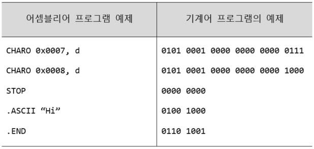
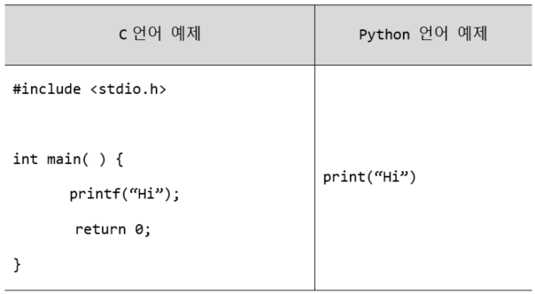

프로그래밍 언어의 종류(High-level/ Low-levbel)
 
- Low-level programming langueges
- machine languages and assembly languages
- popular in the beginnging stage of computers
- usually aiming at computer H/Ws
- High-level programming languages
- easy
- productive
프로그래밍 언어의 역사 및 변화
- 1G(1945 ~ ): maching languages using 0/1, and then assembly languages
- 2G(1950 ~ ): 고급 언어의 시작: Fortran, Lisp, Colol
- 3G(1970 ~ ): structured programming languages의 시작: Pascal, Mudula-2
- 4G(1980 ~ ): object oriented languages의 시작: C++, Objective-C, Perl
- 5G(1990 ~ ): Web 등의 인터넷 환경에서의 생산성 극대화를 위한 언어: Python, R, Ruby, Haskell, Java, JavaScript
고급 프로그래밍 언어 구현 기법
고급 언어로 작성된 소스 프로그램을 실제 컴퓨터에서 실행하기 위해서는 기계어 형태로 바꿔주는 과정이 필요한데, 2가지로 종류로 나눌 수 있다.
- 컴파일러(compiler): 컴퓨터는 2진수를 사용한다. 즉, 0과 1로 모든 정보를 표현한다. 컴퓨터 내부의 기계어 또한 2진수 형태로 되어있기 때문에, 프로그래머가 고급 프로그래밍 언어로 작성한 프로그램(소스 코드, source code)을 기계어(오브젝트 코드, object code)로 바꾸는 과정이 필요한데, 이를 컴파일(compile)이라고 하고, 이 과정을 수행하는 소프트웨어를 컴파일러(compiler)라고 한다. 경우에 따라서는 여러 개의 소스 파일로 나누어서 오브젝트 프로그램을 생성하기도 하는데, 여러 오브젝트 프로그램들을 연결(결합)하여 최종적인 1개의 실행 파일을 만드는 단계가 링크(link) 단계이다.
- 인터프리터(interpreter): 고급 언어로 작성된 소스 프로그램의 명령어(statement)를 프로그램 실행 중(run-time)에 하나씩 실행한다. 아래는 인터프리터 방식의 언어인 파이썬 프로그램이 실행되는 모양을 나타낸다. 인터프리터 언어는 코드를 한 줄씩 해석해서 실행하기때문에, 컴파일 방식의 언어보다 느리다는 단점이 있지만, 전체를 컴파일할 필요없이 즉각적으로 피드백이 가능하다는 장점이 있어 프로그래밍 언어의 학습 목적으로도 사용할 수 있다.
고급 프로그래밍 언어 종류
현재 수 백, 수천 개의 컴퓨터 프로그래밍 언어가 있다고 한다. 이처럼 많은 고급 언어가 있지만 대표적인 것은 다음과 같다.
- Fortran(Formula Translation): 과학 계산용 언어. 현재에도 우주 항공, 기상 예측 등 복잡한 계산을 필요로 하는 공학 등의 분야에서 사용된다. C 언어 등의 등장으로 인하여 과학 기술 분야에서도 Fortran 이외의 새로운 언어가 많이 사용되고 있지만, Fortran은 여전히 기능 확장을 통해서 많이 사용되고 있다.
- COBOL(COmmon Business Oriented Language): 영어 문장에 가까운 표기법을 가지며, 회계 업무 또는 사무 자동화 언어다. COBOL로 개발된 시스템이 여전히 많은 기업에서 사용되고 있기 때문에, 기존 COBOL 프로그램의 유지 보수와 관련된 COBOL 프로그래머의 수요는 여전히 높다.
- Basic(Beginner’s All-purpose Symbolic Instruction Code): 초보자들의 프로그래밍 교육용 언어. 이후에 Visual Basic등으로 발전되어 현재에도 사용되며 GWBasic, QBasic, QuickBasic등 다양한 파생 언어들이 있다.
- C: 1970년대에 Bell 연구소에서 만들어진 언어. 저급 언어와 고급 언어의 장점을 모두 가지고 있어서 많은 사용자를 가지고 있으며, 시스템 개발, 하드웨어 제작 등에 여전히 많이 사용되고 있다. 시스템 간의 호환성이 좋고, 풍부한 연산자를 지원하며, C++나 C#에 비해 가볍고 빠르다. C 언어를 바탕으로 유닉스(UNIX), 리눅스(LINUX) 등의 운영체제가 개발될 수 있었고, 이러한 환경을 바탕으로 컴퓨터 프로그래밍 환경이 성장할 수 있었던 아주 중요한 언어다.
- C++: C 언어에 객체 지향(object-oriented) 개념을 추가한 언어로써, 대규모 응용 프로그램 제작에 많이 사용되고 있다. ‘객체 지향’ 이라는 말은 어떤 객체(사물, 물건, 대상)와 그 객체를 사용하는 명령어들을 체계적으로 묶어서 프로그래밍하는 방법을 말한다.
- C#: C++ 언어가 웹 환경에서 동작하기에는 제한적인 요소가 많아서 자바보다 열세를 보이자, 이를 해결하기 위해서 Microsoft가 C++에 기반을 두고 Visual Basic 등의 프로그래밍 언어가 지니는 프로그래밍의 편의성을 결합한 객체 지향 언어다. 비주얼 프로그래밍 언어의 특성인 사용자 편의성, C++의 객체 지향성, 분산 환경 처리에의 적합성 등을 모두 포함하는 .NET 환경에서의 컴포넌트 기반의 소프트웨어 개발 환경을 제공한다.
- Java: 1990년대 초반에 썬 마이크로시스템즈(Sun Microsystems)사에서 C++의 대부분의 기능을 지원하면서도 C++의 복잡함 등의 단점을 개선하기 위해 만든 언어. 자바는 컴파일러에 의해서 어셈블리어나 기계어로 변환되지 않고 자바 바이트코드(Java Bytecode)로 변환되며, 자바 바이트코드는 자바 가상 머신(Java Virtual Machine)이라고 불리는 인터프리터 상에서 수행되는 구조다. 자바 가상 머신 덕분에 자바 프로그램은 컴퓨터의 종류나 운영체제의 종류에 상관없이 어떤 컴퓨터에서나 수행될 수 있다는 이식성(portability)의 장점을 가지는 반면에, 이러한 인터프리터 구조의 자바 언어의 가장 큰 단점인 수행 속도가 느리다는 단점이 있다.
- Lisp(List Processing): 인공 지능 지향의 언어로써 리스트 형식으로된 데이터를 처리하도록 고안된 함수형 언어. 반복 구조로는 재귀 함수(recursive function)를 사용한다.
- Prolog(Programming in Logic): 추론 시스템 구축시 필연적으로 사용되는 기능들을 용이하게 사용할 수 있는 장점이 있는 언어로써, 지식 처리(knowledge processing)가 편하도록 만들어진 인공지능용 언어.
- PHP(Personal Hypertext Preprocessor): 동적인 웹 문서를 빠르게 작성할 수 있도록 별도의 실행 파일 없이HTML 문서 안에 직접 포함시켜 사용하는 서버 측 스크립트 언어.
- JavaScript: HTML 문서 내부에서 사용되는 객체 기반의 스크립트 언어로써 주로 웹 프로그래밍을 위한 언어다. 자바 언어는 주로 ‘서버 쪽 웹 프로그래밍(server-side web programming)’에 사용되고, 자바 스크립트는 ‘클라이언트 쪽 웹 프로그래밍(client-side web programming)’에 주로 사용되며, HTML 문서 내에서 클라이언트의 웹 브라우저에 의해서 해석되고 실행되는 인터프리터 언어다. 최근에는 JavaScript 언어도 node. js와 같은 형식으로 서버 쪽 프로그래밍에서도 활발하게 사용된다.
- Objective-C: C 언어에 스몰토크(Smalltalk) 프로그래밍 언어 형식의 메시지 구문을 추가한 객체 지향 언어로써, 프로그래밍이 쉽고 단일 상속을 지원하기 때문에 C++보다 문법이 단순하다. 애플의 운영체제인 iOS에서 사용되고 있다.
- Python: Ruby, Perl과 함께 대표적인 3세대 객체 지향형 스크립트 언어의 하나로써 문법 구조가 간단하고, 시스템 언어와 스크립트 언어의 중간에 위치한 성격의 언어로써, C, C++를 사용하여 새로운 모듈을 쉽게 만들 수 있는 등 다른 언어와 잘 융합되는 특징이 있다.
- Perl(Practical Extraction and Reporting Language): 웹 상에서 자료를 추출하여 그 정보를 바탕으로 새로운 문서를 작성하기 위해 사용되는 스크립트 언어.
- R: 1993년에 처음 등장한 R은 통계 컴퓨팅을 위한 언어로써 데이터 마이닝, 통계학 등에서 많이 사용된다.
- Closure: Lisp 프로그래밍 언어에서 변형된 함수형 언어다. 자바 가상 머신과, CLR(공통 언어 런타임), 자바 스크립트 엔진 상에서 실행된다.